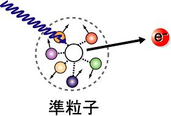

固体金属中の準粒子が受ける多体相互作用の研究
金属の電気物性は、固体中を伝搬する電子が担っている。その電子間に相互作用が働くと、裸の電子やホールに代わって「相互作用の衣を着た」準粒子が系の素励起となる。固体内部で電子が受ける相互作用の情報は、「放射光」を用いた光電子分光法で直接観測することができる。放射光は、真空中を運動する電子が磁場によって曲げられるときに放射する光で、物理学、生物学、地球科学、医療など多くの科学分野で欠かせないツールとなっている。近年、光電子分光装置の高分解能化 (エネルギー・運動量) や極低温化が飛躍的に進み、Ce 化合物の近藤共鳴ピークの観測 [1,2] や銅酸化物高温超伝導体のフェルミ準位をよぎるバンドの折れ曲がり構造 ( kink 構造) の観測 [3]、超伝導ギャップ [4] やボゴリュ−ボブ準粒子の直接観測 [5] など、フェルミ準位近傍の微小な準粒子状態の観測が可能となってきた。しかし、その準粒子状態の解釈には未だに多くの議論が絶えない。

こうした微細電子構造の解釈を基礎づけるためには、比較的電子構造が単純で、物性がよくわかっている系に関する精密な実験研究を積み重ねていくことが強く望まれる。光物性研究室では、広島大学放射光科学研究センター (HiSOR) の BL-1 において単体金属や、希土類金属などについて高分解能光電子分光実験を行ってきた。現在までに Cu や Ni、Rh、Ce 単結晶試料の角度分解光電子分光実験を行い、多数の研究成果を発表している。
参考文献
[1] E. Wescheke et al., Phys. Rev. B 44, 8304 (1991)
[1] E. Wescheke et al., Phys. Rev. B 58, 3682 (1998)
[3] P. D. Johnson et al., Phys. Rev. Lett. 87 177007 (2001)
[4] H. Ding et al., Phys. Rev. Lett. 87 227001 (2001)
[5] H. Matsui et al., Phys. Rev. Lett. 90, 217002 (2003)